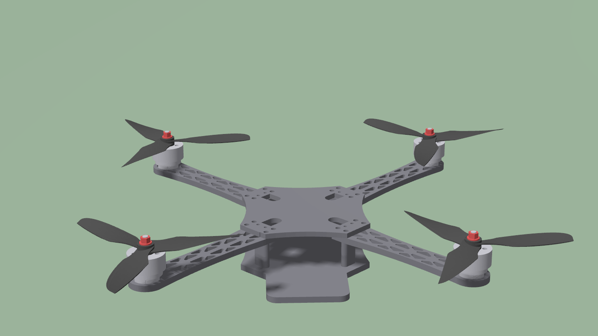
Summary. Build 03 is a 7-inch, 0.93 kg quadcopter: 2807 motors, 7040 tri-blade props, 6S. In simulation it used to fly on Gazebo's built-in velocity controller, a black box with no position loop. This document describes the controller that replaced it. It is the same cascade PX4 and ArduPilot use (position → velocity → thrust vector → attitude → body rate → mixer), written as one ROS 2 node in C++. Each loop is derived, tied to the code that implements it, and shown working on data recorded from the simulator.
A quadcopter has four inputs (the motor speeds) but six degrees of freedom. All four props push along one axis, the body z axis, so the vehicle cannot push sideways; it has to tilt its thrust. That forces a chain:
position → velocity → acceleration → tilt → body rate → torque → motor speeds
Each arrow is one controller, and each treats the loop inside it as a perfect actuator. That only holds if every inner loop is clearly faster than the one wrapped around it. The table below shows the separation used here: roughly a factor of three per stage.
| Loop | Gain (physical units) | Rough bandwidth |
|---|---|---|
| Motors (physics) | time constant 20 ms | 50 rad/s |
| Rate | Kp = 18 (rad/s² per rad/s) | 18 rad/s |
| Attitude | Kp = 6 (rad/s per rad) | 6 rad/s |
| Velocity | Kp = 2 (m/s² per m/s) | 2 rad/s |
| Position | Kp = 1 (m/s per m) | 1 rad/s |
Loop bandwidths, inner to outer.
flight_controller. A position setpoint
enters on the left, a velocity setpoint (teleop) one block later. The
collective thrust goes straight from the thrust-vector block to the mixer.The code is split in two:
my_drone_control/include/my_drone_control/control.hpp: the maths, free of ROS and unit tested
(my_drone_control/test/test_control.cpp).my_drone_control/src/flight_controller.cpp: ROS input and output, setpoint
modes, arming and failsafes.Mass, inertia, motor constants and rotor layout are read from a
<quad_physics> element that quad_gazebo.xacro
writes into the URDF. The controller therefore always uses the same numbers as
the simulated vehicle. Gains live in config/controller.yaml.
Gazebo's MulticopterMotorModel turns a commanded rotor speed
ω into thrust and a drag torque on the body:
Hover needs mg/4 = 2.28 N per rotor, so ωhover = √(2.28/k) ≈ 785 rad/s. That is exactly the speed the rotors settle at in the simulator. Full thrust is 19.6 N per rotor, which gives a thrust-to-weight ratio of 8.6. The vehicle is heavily overpowered, which is why the position loops are capped (Section 6).
Rotation follows Euler's rigid-body equation, with J the inertia (Ixx = 0.00711, Iyy = 0.00754, Izz = 0.01362 kg m²):
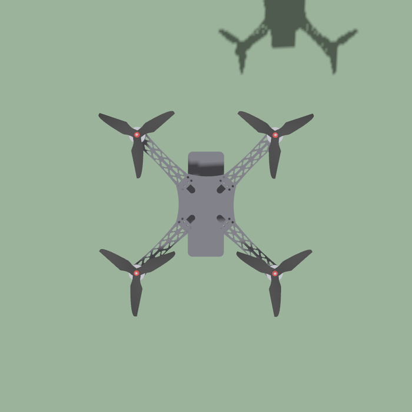
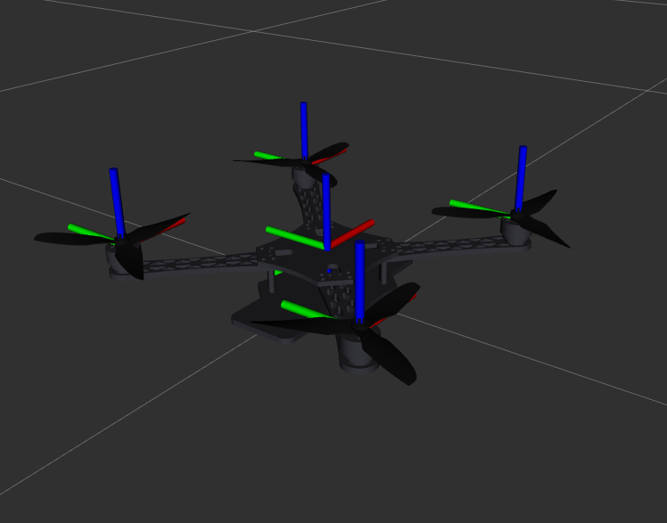
The controller asks for a collective thrust T and body torques τx, τy, τz. Rotor i sits at (xi, yi) and spins with direction di (+1 counter-clockwise). Its thrust fi contributes:
The rows read as follows:
A is built from the rotor geometry and inverted once at start-up, so f = A−1[T, τ]⊤ and ωi = √(fi/k). Building A from geometry means any quad layout works without a hand-written mixer table.
Yaw is the weak axis. Roll and pitch act through a 0.143 m lever; yaw only through c = 0.016 m, nine times less. Near hover a large yaw demand asks for more thrust difference than the motors have. The first version of the mixer dropped yaw entirely when that happened, and the drone stalled 62° short of its yaw target.
The fix follows PX4. Thrust, roll and pitch are served first. Yaw then gets the largest fraction s ∈ [0, 1] of its torque that keeps every rotor within its limits:
Figure 4 shows this during a 90° turn. One diagonal pair is pushed down to the idle floor while the other speeds up, so total thrust stays constant. The pairs swap roles to brake the turn.
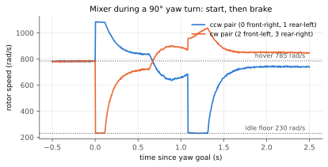
The innermost loop makes the body spin at the rate ωsp that the attitude loop asks for. It reads the gyro directly and runs on every IMU sample (250 Hz), the way a real flight controller is triggered.
What each part does:
rate_i_max) so it cannot wind up while the drone sits on
the ground.Orientation is kept as a quaternion. Euler angles have a singularity at 90° pitch and wrap at ±180°; a quaternion has neither problem. The error rotation, expressed in body axes, is
The result is saturated at rate_max.
A quaternion's vector part is n sin(θ/2). For small errors 2 sin(θ/2) ≈ θ, so the law is simply “spin rate = gain × angle error”, about the correct axis. The sign term picks the shorter way round.
A P controller is enough here. The rate loop below behaves like an integrator (rate becomes angle), so the attitude loop has no steady-state error. Yaw gets a lower gain (3 instead of 6) because it has the least authority.
Between 50 Hz odometry updates the attitude estimate is propagated with the gyro. This is the prediction step of any real estimator:
This block connects the “where to go” loops to the “how to point” loops. The velocity loop asks for a world acceleration asp, and the props must also cancel gravity:
Here f is the specific thrust (thrust per unit mass, in the world frame). Its direction is where body z must point; its size is how hard to push.
Before use it is limited in PX4's priority order:
The target orientation is then built from two requirements: body z along f, and the nose at the commanded yaw ψ. Body y is ẑb × (cos ψ, sin ψ, 0), and body x completes the frame.
The collective thrust uses the body z the vehicle has now:
While it is still rotating toward the target it applies only the useful component of thrust, so it does not balloon upward mid-manoeuvre.
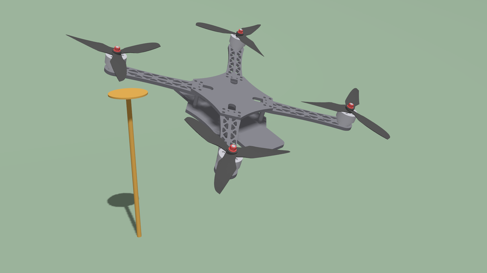
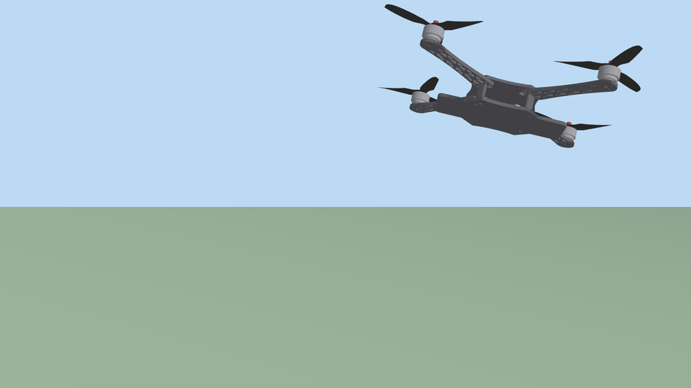
A long move has two phases. While the error is large the speed cap is active, so the drone cruises at constant speed. Once the error falls below 3 m, the setpoint decays exponentially, by a factor of e per second with Kp = 1.
There is no integral term. The velocity integrator already removes steady disturbances, and a second integrator would mostly add overshoot.
Figure 6 shows the whole cascade on one step:
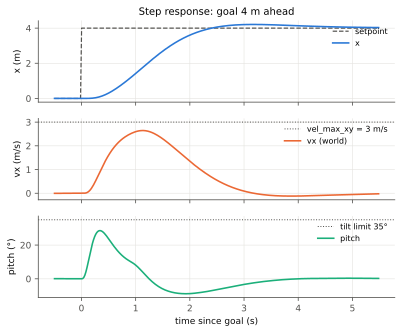
Setpoint modes. The input that arrived most recently wins, as in PX4's offboard mode:
/goal_pose enters the cascade at the position loop./cmd_vel (teleop) enters at the velocity loop.When the stick is centred, or /cmd_vel goes quiet for
0.5 s, the drone first brakes with vsp = 0.
Once slower than 0.3 m/s it latches a position hold, so it stops and stays
put instead of drifting. The yaw setpoint freezes the moment the yaw stick is
released (Figure 7).
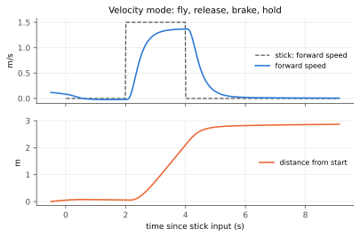
Ground and arming. The controller does the following:
Failsafe. If odometry stops for more than 0.2 s, the drone holds level on the gyro-propagated attitude and sinks at 90% of hover thrust.
Estimator. /odom is currently Gazebo's ground truth. An
EKF (for example robot_localization) publishing the same topic
would drop in without changing the controller. Sensors only ever feed the
estimator, never the controller.
The route below was flown with goto.py:
0,0,1.5 → 3,3,2 → -2,1,1,90° → 2,-2,2,90° → 0,0,2,-90° → 0,0,2,180° → 0,0,1.5
A waypoint counts as reached within 0.15 m, below 0.2 m/s, and within 5° of yaw.
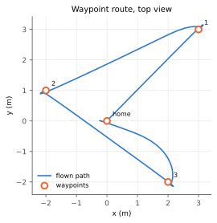
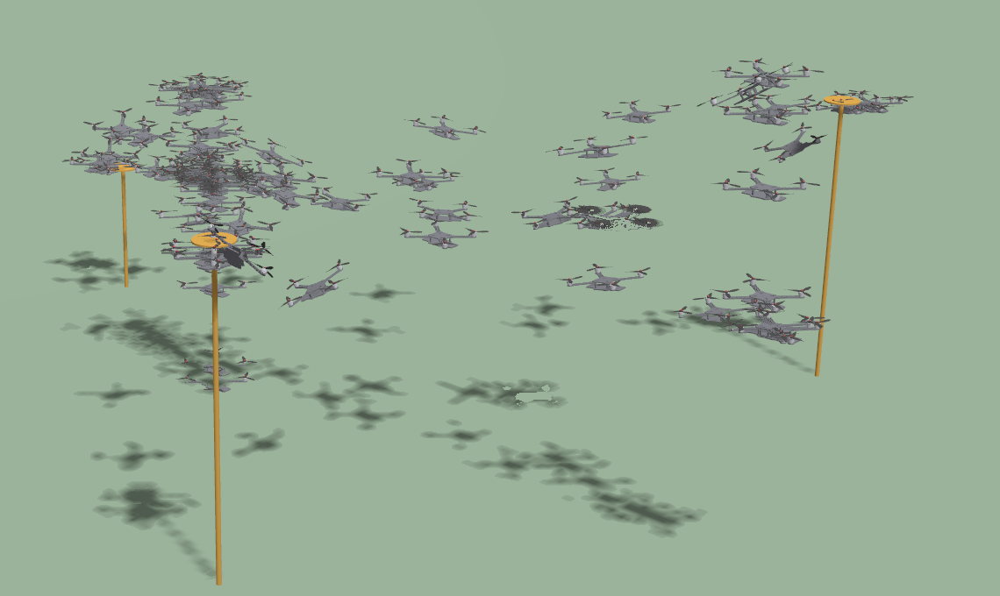
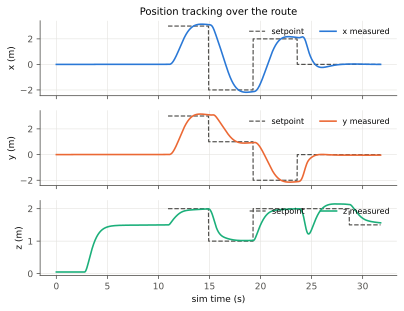
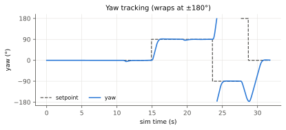
| Waypoint | Time to reach (s) | Overshoot (m) |
|---|---|---|
| (3, 3, 2) | 4.0 | 0.21 |
| (−2, 1, 1), yaw 90° | 4.4 | 0.20 |
| (2, −2, 2), yaw 90° | 4.3 | 0.22 |
| (0, 0, 2), yaw −90° | 4.0 | 0.17 |
| (0, 0, 2), yaw 180° | 1.1 | 0.00 |
| (0, 0, 1.5), yaw 0° | 1.9 | 0.00 |
Waypoint performance (simulation time).
controller:=gz still selects Gazebo's
MulticopterVelocityControl, a geometric controller of the Lee et
al. type. Its loops are velocity → attitude → rate, all
proportional-derivative.
| Gazebo's controller | This controller | |
|---|---|---|
| Position loop | none: zero stick means zero velocity, so it slowly drifts | brakes, then holds a point |
| Integral terms | none: model errors leave a steady offset | velocity and rate integrators remove them |
| Thrust priority | fixed tilt cap | vertical first, thrust headroom kept |
| Yaw when saturated | no special handling | largest share that fits |
| Go-to-goal | not possible | built in (/goal_pose) |
| Code | closed inside a Gazebo plugin | control.hpp, unit tested |
Tune from the inside out: rate, then attitude, then velocity, then position. Keep each outer loop about 3–5× slower than the loop inside it.
| Symptom | Change in config/controller.yaml |
|---|---|
| Fast wobble or buzz in hover | lower rate_p, or raise rate_d slightly |
| Slow, lazy attitude | raise att_p (keep it below rate_p/3) |
| Overshoots waypoints | lower vel_max_xy or pos_p, or raise vel_p |
| Sags or drifts in altitude | raise vel_i on z |
| Slow, weak yaw | raise att_p/rate_p on yaw (it is drag-limited) |
Changes take effect after colcon build and a relaunch. The unit
tests (colcon test --packages-select my_drone_control) check the mixer's
signs and scale, the attitude error signs and the tilt limit.